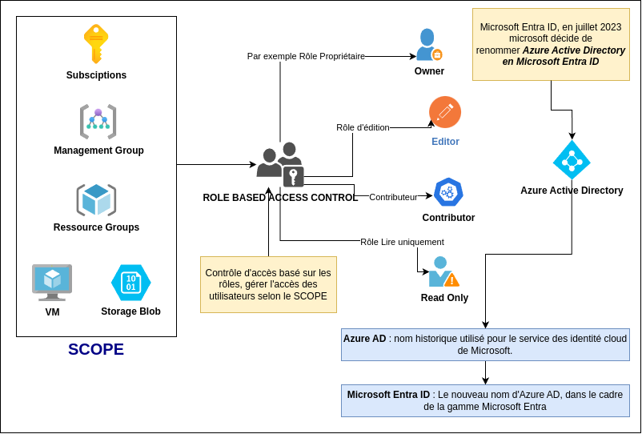

Veille systèmes de sécurité
Partie 1 : Veille sur les Systèmes de Sécurité
IAM et Role-Based Access Control (RBAC)
IAM (Identity and Access Management)
Un Ensemble de règles et de technologies qui garantit que les bonnes personnes au sein d'une organisation ont les accès appropriés. cela consiste à gérer qui peut accéder à quoi (un utilisateur, un groupes d'utilisateurs, services) en contrôlant l'accès et les interactions avec les ressources dans le cloud.
Role-Based Access Control (RBAC)
Au coeur de nombreux systèmes IAM se trouve le contrôle d’accès basé sur les rôles (RBAC), une méthode permettant de gérer l'accès des utilisateurs au ressources informatiques ou réseau en fonction des rôles des individus au sein de l'organisation. Les autorisations sont regroupées dans des rôles, les utilisateurs sont ensuite affectés à ces rôles en fonction de leurs fonctions dans l'entreprise, les autorisations n'ont pas besoin d'être attribuées individuellement à chaque utilisateur.
Il existe une autre méthode pour gérer les accès, il s'agit du modèle d'accès ACL (Liste de Contrôle d'Accés), choisir entre RBAC ou ACL dépend du niveau de précision requis. RBAC est souvent suffisant pour gérer les autorisations, tandis que les ACL offrent un contrôle plus précis lorsuqe c'est nécessaire.
ACL : offre un contrôle plus précis, permet de spécifier des autorisations d'accès pour des objets individuels au sein d'un service, exemple Contrôler quels utilisateurs peuvent lire ou écrire des fichiers ou dossiers spécifiques dans Azure Storage.

Microsoft Entra ID
Anciennement appelé Azure Active Directory (Azure AD), est le service de gestion des identités et des accès (IAM).
Permet de gérer les utilisateurs, les groupes et les applications, tout en sécurisant l'accès aux ressources dans azure cloud, (on-premises) et même dans des environnements hybrides.
Azure Key Vault
Un service qui permet de stocker et d'accéder de manière sécurisé à des secrets, comme des mots de passe, des clés API, et des certificats, bien qu'il s'agisse d'un service distinct de Microsoft Entra ID, ils fonctionnent ensemble pour offrir une sécurité renforcée à vos informations sensible
Azure Key Vault une plateforme robuste pour gérer toute données sensible, et protéger les informations critiques.
Azure Key Vault peut stocker différents type d'infromations sensibles, les pricnipaux types de secrets : - Mots de passe : stocker en toute sécurité les mots de passes pour les applications, bases de données, et autres services. - Clés API : Gérer les clés d'API pour accéder à des services externes. - Certificats : certificats SSL/TLS pour des sites web et des applications, simplifiant leur gestion et garantissant une communication sécurisée. - Chaîne de connexion (Connection String) : stocker de manière sécurisé les chaînes de connexion pour des bases de données, des files d'attentes de messages et d'autres services. - Secrets personnalisés : Stocker tout type de données sensibles sous frome de secret personnalisé (avec une certaine limite de taille)
Voici pourquoi envisager d'utiliser Azure Key Vault :
- Authentification et autorisation sécurisées : Key Vault s’appuie sur Azure Active Directory et les rôles Azure RBAC pour garantir un contrôle d’accès précis.
- Protection des clés et secrets : Ils peuvent être protégés par logiciel ou matériel (via des modules HSM) pour une sécurité renforcée.
- Administration simplifiée : Key Vault offre une gestion facile et une haute disponibilité grâce à la réplication des données.
- Surveillance des accès : Vous pouvez activer la journalisation pour suivre les accès et les actions effectuées.
- Intégration native avec les services Azure : Key Vault s’intègre parfaitement avec des services comme Azure Disk Encryption, SQL Server et Azure App Service, ce qui simplifie son utilisation dans les environnements Azure.
C’est une solution complète pour sécuriser et gérer les secrets et clés dans le cloud.
Storage Access Keys
Essentiels pour protéger les données.
Chaque compte de stockage dispose généralement de deux clés d'accès : Une clé principale et une clé secondaire. Cela offre une sécurité et une flexibilité supplémentaires.
Par exemple, utiliser la clé principale les opérations courantes et conserver la clé secondaire comme sauvegarde au cas où la clé principale serait compromise.
Il est crucial de garder ces clés secrètes et de les manipuler avec précaution. Il faut éviter de les stocker directement dans code ou dans les fichiers de configuration. Il est conseiller d'utiliser des solutions de stockage sécurisé comme Azure Key Vault.
La rotation régulière des clés réduit la période de vulnérabilité en cas de compromission. Plus une clé est utilisée longtemps, plus le risque qu'elle soit accidentellement exposée ou volée augmente. En les changeant fréquemment, on rend plus difficile l'accès prolongé de personnes non autorisées aux données.
Shared Access Signatures (SAS) (Delegation Key)
Les Shared Access Signatures (SAS), en particulier celles utilisant des clés de délégation utilisateur, offrent un moyen puissant de donner un accès limité et contrôlé aux ressources Azure Storage sans partager les clés d'accès au compte. Il s'agit de délivrer des clés d'accès temporaires au compte de stockage.
Avec les User Delegation SAS, permettent de définir des niveaux d’accès précis, comme lecture, écriture ou liste, pour des ressources spécifiques comme des blobs, des conteneurs ou des files d’attente.
De plus, on peut définir des dates d’expiration pour que l’accès soit automatiquement révoqué après une certaine période. Cela permet un contrôle précis de l’accès aux données et une meilleure sécurité.
Types de jetons SAS (Shared Access Signatures)
Service SAS
Ce type de SAS donne accès à un service de stockage spécifique, comme Blob, Queue, Table ou File. Il permet de déléguer l’accès à une ressource particulière au sein du service, par exemple un blob ou un conteneur spécifique.
Account SAS
Un Account SAS offre un accès plus large, permettant de déléguer l’accès à plusieurs services de stockage au sein d’un même compte. Il est généralement utilisé dans des scénarios où un accès à un éventail plus large de ressources est nécessaire.
User Delegation SAS
Ce type de SAS, utilise les identifiants Azure AD pour l’authentification. Il permet de fournir un accès basé sur l’identité et les permissions de l’utilisateur dans Azure AD, offrant un contrôle précis sur l’accès aux données.
Service Principal
En termes simples, un service principal est un outil doté d'une identité, créé et géré au plus haut niveau dans un annuaire, tout comme les utilisateurs. Lorsqu'un service principal est créé, une relation de confiance à sens unique est établie entre ce service principal et la plateforme d'identité Azure.